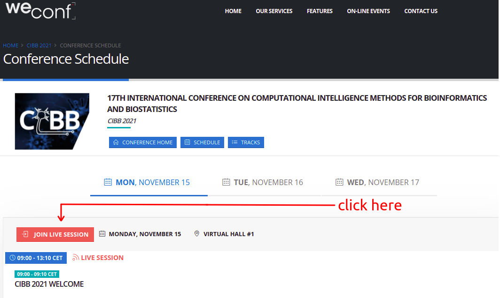

CIBB 2021 Computational Intelligence Methods for Bioinformatics and Biostatistics
The main goal of this 17th edition of the CIBB international conference is to provide a multi-disciplinary forum open to researchers interested in the application of computational intelligence, in a broad sense, to open problems in bioinformatics, biostatistics, systems and synthetic biology and medical informatics. Cutting-edge methodologies capable of accelerating life science discoveries will be discussed.
Following its tradition and roots, this year's meeting will bring together researchers from the international scientific community interested in advancements and future perspectives in bioinformatics and biostatistics. Moreover, looking at current trends and future opportunities at the edge of computer and life sciences, the application of computational intelligence to system and synthetic biology, and the consequent impact on innovative medicine will be of great interest for the conference. Theoretical and experimental biologists are also invited to participate in order to present novel challenges and foster multidisciplinary collaboration.
After the conference, the authors of all the accepted short papers presented at the conference will be invited to submit an extended version of their manuscripts to the conference proceedings book in Springer Lecture Notes in Bioinformatics (LNBI) or to a journal supplement in BMC Bioinformatics or BMC Medical Informatics and Decision Making.
When & where
The CIBB 2021 conference will happen online on 15, 16, 17 November 2021.
Registration
The registration is now open and authors presenting an article can register here on this website of Athena Consulting.
The virtual attendance to the conference is free of charge for all the people not presenting an article.
Questions related to the registration and the payment can be addressed to Athena Consulting at athena(AT)athenaconsulting.eu
When contacting the conference chairs or Athena Consulting, please include the information about the EasyChair number of your article.
Scientific programme
The draft programme of the conference can be found in the programme webpage.
Each registered participant will have a slot of 20 minutes (15 minutes for slides plus 5 minutes for questions and answers) to present her/his short paper content.
Conference online participation
To participate in the the conference, participants , keynote speakers, invited speakers, chairs, and all attendees can visit the CIBB 2021 website on WeConf (https://weconf.eu/cibb-2021/schedule) and then click on the red button saying JOIN LIVE SESSION, that contains a Zoom link.
Please also see the following screenshot:

The registration to WeConf is not requried to attend the conference (it will be needed after the conference to access the conference content).
Deadlines & timelines:
Special session & tutorial proposal submission: 31 July 2021
Short paper submission: 15 September 2021
Late short paper submission: 25 September 2021
Acceptance/rejection notification: 18 October 2021
Registration opening: 27 October 2021
Camera-ready article submission: 2 November 2021
Conference registration for presenters: 10 November 2021
Conference: 15, 16, 17 November 2021
Contacts
For any question, please contact the main conference chairs via email at cibb2021(AT)protonmail.com
Website
The official URL of CIBB 2021 is www.isa.cnr.it/cibb2021
Please spread it to your collaborators and colleagues.